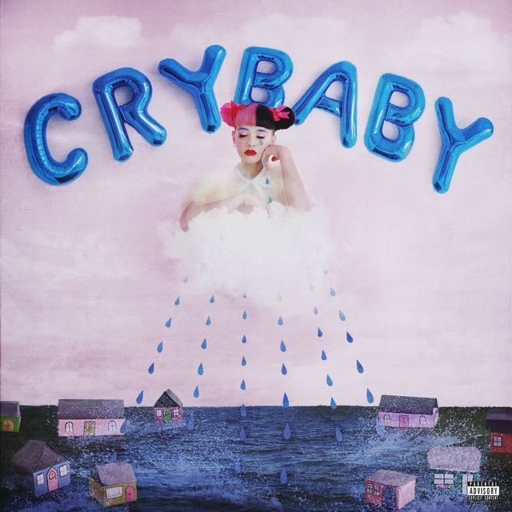
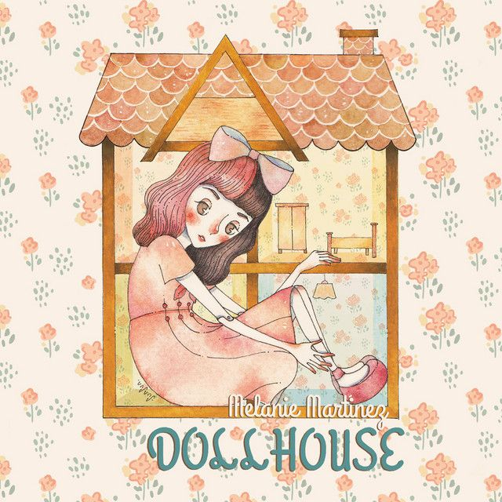

Biografia
Melanie Martinez construye sus discos como mundos. Sus canciones suelen mezclar melodias dulces con temas incomodos o personales.
La ficha resume sus eras principales sin convertir la web en un laberinto.
Alt pop / conceptual pop
Cantante estadounidense conocida por crear eras visuales completas, personajes reconocibles y un pop oscuro con imaginario infantil.

Melanie Martinez construye sus discos como mundos. Sus canciones suelen mezclar melodias dulces con temas incomodos o personales.
La ficha resume sus eras principales sin convertir la web en un laberinto.

